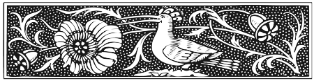

I am a domestic theologian, trustee, Montessorian, Orthodox Christian, and mother of five living in Charlottesville, Virginia. The focus of my academic work as a PhD student in the Religious Studies Department at the University of Virginia is theology and family, especially the development of a theological understanding of motherhood.
“Under Her Heart: Motherhood in Kristin Lavransdatter,” First Things Online, January 2011
The full, nuanced, and rare treatment of motherhood in the epic trilogy about a pious Christian woman in fourteenth century Norway.
At First Things.
“Brood Comments,” Salvo Winter 2009
The unintentionally public experience of parenting of a large family.
At Salvo.
“Easter in Technicolor,” Commonweal, April 2007
The ancient tradition of Ukrainian egg dyeing and its theological import.
At Commonweal.
“Searching for Mothers in the Fathers,” Sophia Institute Conference Proceedings, 2009
The challenges and rewards of seeking theological thought on motherhood in patristic sources, with particular attention paid to John Chrysostom’s homilies on Hannah.
“An Introduction to a Theology of Motherhood,” Saint Nicholas Parish Speaker Series, 2009
The lacunae of sustained theological reflection on motherhood and the location of the occasional gem of insight on motherhood.
“A Theological Vision of Motherhood,” Women Disciples of the Lord Conference, Saint Vladimir’s Seminary, 2011
The crafting of a theological view of motherhood from the bits of pieces of theological reflection on motherhood from homilies, hymns, icons, and theological works of Orthodox Christianity throughout the past two thousand years.
“Formed by a Mother’s Prayer: Prayer, Pregnancy, and Motherhood in John Chrysostom’s Homilies on Hannah,” Family and Children in the Patristic Tradition Conference, Pappas Patristic Institute, 2011
Hannah’s prayer for a child as a model for prayer before and during pregnancy which can be used today, both by mothers and by the church.
Parish Member and Religious Formation Committee, St. Nicholas Orthodox Church, Greenwood, Virginia
Mountaintop Montessori School Trustee, Charlottesville, Virginia
Haven Homeless Day Shelter Development Committee, Charlottesville, Virginia
Trustee Chair, Historic Walnut Grove Cemetery, Bluefield, West Virginia